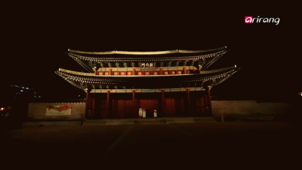

Changdeokgung, also known as Changdeokgung Palace or Changdeok Palace, is set within a large park in Jongno District, Seoul, South Korea. It is one of the "Five Grand Palaces" built by the kings of the Joseon Dynasty. Changdeokgung is an exceptional example of official and residential buildings that were integrated into and harmonized with their natural setting. If you are making plans to visit Seoul, I suggest you visit Changdeokgung Secret Garden.
